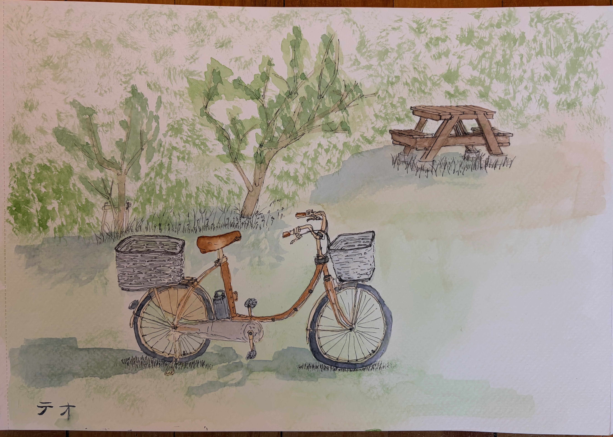
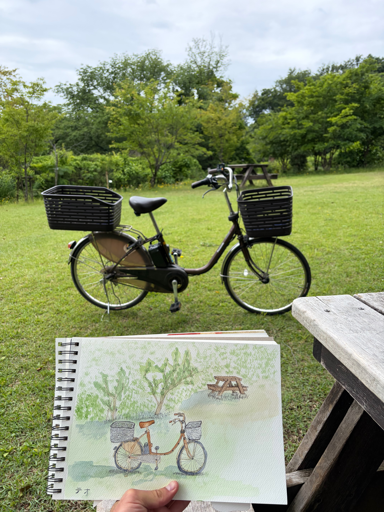
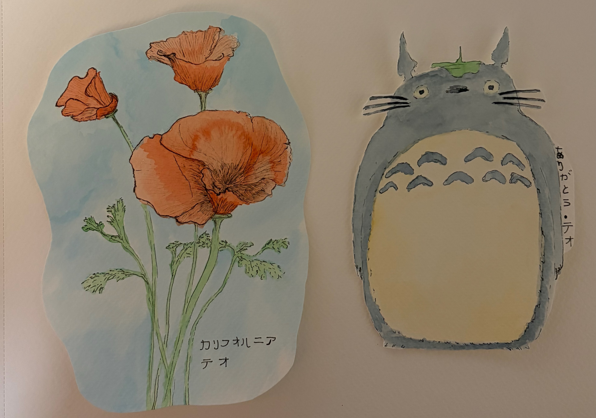

Three watercolors from my time living in Japan. Each of these were from when I was living with a host family adjacent to the forest that Totoro's forest is based off of. The flowers are California poppies, which I gifted to an older local Japanese man who welcomed me into his home for tea after being intrigued by the watercolor of the bike in the park he was also in.


